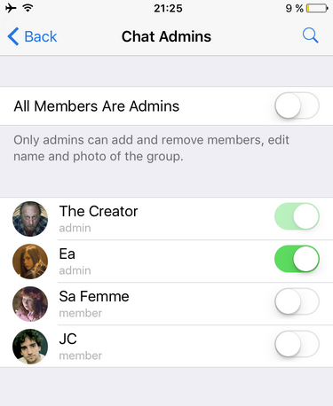
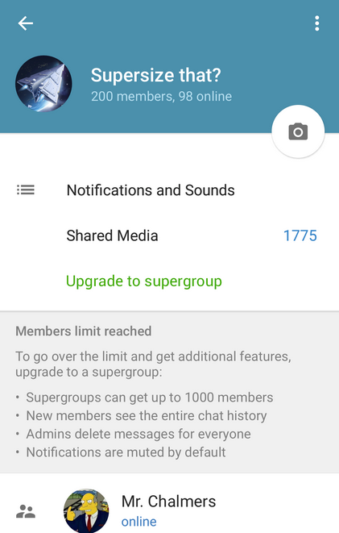
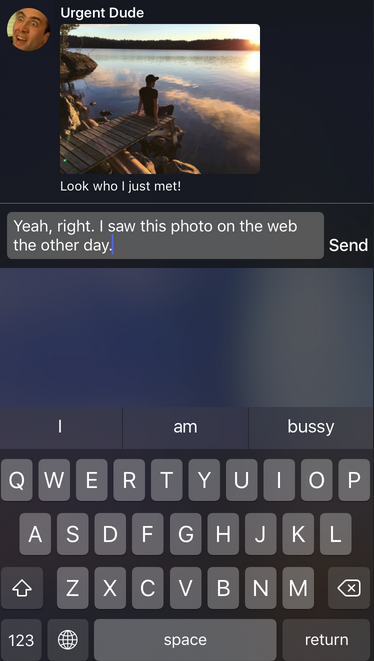
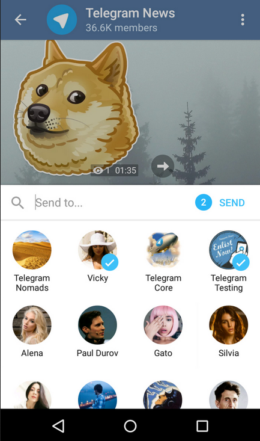

首頁 >官方新聞 > 管理員、超級群組及更多（原文）
透過設計，Telegram 群組是民主的。每個人都可以邀請新成員，改變群組名稱和照片，這對朋友或同事群來說是理想的。但 Telegram 可以支援需要更多管理的較大社群。為了讓大型群組運作更容易，我們今天要介紹管理員。
從現在起，您可以選擇如何操作您的群組。預設情況下，所有成員仍然可以操控上述功能。但是，如果您希望更有秩序，您可以關閉「所有成員都是管理員」的選項，並任命群組中的某些人為管理員。

如果您啟用了新的受限制模式，只有管理員可以添加新成員，及更改群組名稱與照片。而管理員也有從群組中刪除其他成員的權力。
超級群組
Telegram 群組一直領先競爭對手好幾步。您可以在多達200人的群組有效溝通，透過使用「回覆」、「提及」和「主題標籤」。現在是時候更進一步了。
自從我們在2013年啟動專案以來，我們的用戶一直告訴我們，他們想要將更大的社群遷移到 Telegram。從今天起，一旦您的群組成員滿了，您可以將其升級到支援多達1000個成員的超級群組。

超級群組對主持大型網路社群進行了優化，並且能夠快速載入，即使您中途錯過了許多訊息。這裡有您需要知道的，關於它們是如何運作的：
- 新成員加入時，可以看到完整的聊天歷史紀錄。
- 管理員可以刪除每個人的訊息。
- 普通成員只能刪除自己的訊息。
- 訊息通知預設是關閉的，並且會減少成員加入或離開群組的通知。
所有官方Telegram 客戶端在今天獲得了這個更新。
請注意，您需要最新版本的 Telegram 以存取超級群組。您可能需要稍微等一下再升級您的群組，以便讓所有成員都有時間升級 Telegram，讓他們可以正常看到升級後的群組。
iOS版的紅利：目前為止最佳的程式內通知
iOS用戶將享有我們新的程式內通知。向下拉一通知以將其展開、檢視訊息的全文，或預覽附加的媒體。

您可以立即傳送一快速回覆或貼圖 - 不必離開和其他人交談中的特定點。
Android版的紅利：快速分享頻道訊息的選單
同時，Android版 用戶可以在頻道中享有「快速分享選單」。只需要輕觸在頻道訊息右側的轉寄按鈕。

今年，我們袖子裡還有更多的驚喜。敬請期待更多的更新！
電報團隊
2015年11月25日